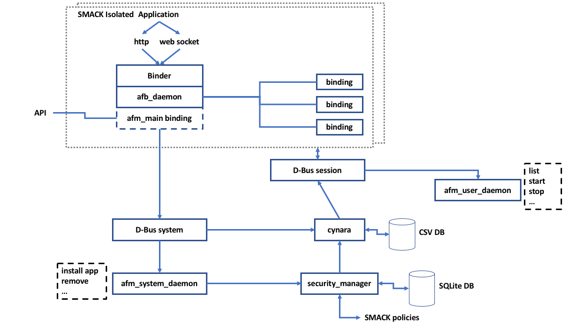

The Automotive Grade Linux platform is a Linux distribution with AGL compliant applications and services. The platform includes the following software:
- Linux BSP configured for reference boards.
- Proprietary device drivers for common peripherals on reference boards.
- Application framework.
- Windows/layer management (graphics).
- Sound resource management.
- An atomic software update system (chapter Update).
- Building and debug tools (based on Yocto project).
| Domain | Improvement |
|---|---|
| Platform-Abstract-1 | Create a graphics and sound part. |
This part focuses on the AGL platform including all tools and techniques used to upgrade the security and downgrade the danger. It must be possible to apply the two fundamental principles written at the very beginning of the document. First of all, security management must remain simple. You must also prohibit everything by default, and then define a set of authorization rules. As cases to deal with, we must:
- Implement a MAC for processes and files.
- Limit communication between applications (SystemBus and SystemD part).
- Prohibit all tools used during development mode (Utilities and Services part).
- Manage user capabilities (Users part).
- Manage application permissions and policies (AGLFw part).
The tools and concepts used to meet these needs are only examples. Any other tool that meets the need can be used.
In AGL, as in many other embedded systems, different security mechanisms settle in the core layers to ensure isolation and data privacy. While the Mandatory Access Control layer (SMACK) provides global security and isolation, other mechanisms like Cynara are required to check application's permissions at runtime. Applicative permissions (also called "privileges") may vary depending on the user and the application being run: an application should have access to a given service only if it is run by the proper user and if the appropriate permissions are granted.
Discretionary Access Control
Discretionary Access Control (DAC) is the traditional Linux method of separating users and groups from one another. In a shared environment where multiple users have access to a computer or network, Unix IDs have offered a way to contain access within privilege areas for individuals, or shared among the group or system. The Android system took this one step further, assigning new user IDs for each App. This was never the original intention of Linux UIDs, but was able to provide Android’s initial security element: the ability to sandbox applications.
Although AGL mentions use of DAC for security isolation, the weight of the security responsibility lies in the Mandatory Access Control (MAC) and Cynara. Furthermore, there are system services with unique UIDs. however,the system does not go to the extreme of Android, where every application has its own UID. All sandboxing (app isolation) in AGL is handled in the MAC contexts.
Mandatory Access Control
Mandatory Access Control (MAC) is an extension to DAC, whereby extended attributes (xattr) are associated with the filesystem. In the case of AGL, the smackfs filesystem allows files and directories to be associated with a SMACK label, providing the ability of further discrimination on access control. A SMACK label is a simple null terminated character string with a maximum of 255 bytes. While it doesn’t offer the richness of an SELinux label, which provides a user, role,type, and level, the simplicity of a single value makes the overall design far less complex. There is arguably less chance of the security author making mistakes in the policies set forth.
Acronyms and Abbreviations
The following table lists the terms utilized within this part of the document.
| Acronyms or Abbreviations | Description |
|---|---|
| ACL | Access Control Lists |
| alsa | Advanced Linux Sound Architecture |
| API | Application Programming Interface |
| AppFw | Application Framework |
| BSP | Board Support Package |
| Cap | Capabilities |
| DAC | Discretionary Access Control |
| DDOS | Distributed Denial Of Service |
| DOS | Denial Of Service |
| IPC | Inter-Process Communication |
| MAC | Mandatory Access Control |
| PAM | Pluggable Authentication Modules |
| SMACK | Simplified Mandatory Access Control Kernel |
Mandatory Access Control
We decided to put the MAC protection on the platform part despite the fact that it applies to the kernel too, since its use will be mainly at the platform level (except floor part).
Mandatory Access Control (MAC) is a protection provided by the Linux kernel that requires a Linux Security Module (LSM). AGL uses an LSM called Simplified Mandatory Access Control Kernel (SMACK). This protection involves the creation of SMACK labels as part of the extended attributes SMACK labels to the file extended attributes. And a policy is also created to define the behaviour of each label.
The kernel access controls is based on these labels and this policy. If there is no rule, no access will be granted and as a consequence, what is not explicitly authorized is forbidden.
There are two types of SMACK labels:
- Execution SMACK (Attached to the process): Defines how files are accessed and created by that process.
- File Access SMACK (Written to the extended attribute of the file): Defines which process can access the file.
By default a process executes with its File Access SMACK label unless an Execution SMACK label is defined.
AGL's SMACK scheme is based on the Tizen 3 Q2/2015. It divides the System into the following domains:
- Floor.
- System.
- Applications, Services and User.
See AGL security framework review and Smack White Paper for more information.
Floor
The floor domain includes the base system services and any associated data and libraries. This data remains unchanged at runtime. Writing to floor files or directories is allowed only in development mode or during software installation or upgrade.
The following table details the floor domain:
| Label | Name | Execution SMACK | File Access SMACK |
|---|---|---|---|
- |
Floor | r-x for all |
Only kernel and internal kernel thread. |
^ |
Hat | --- for all |
rx on all domains. |
* |
Star | rwx for all |
None |
-
The Hat label is Only for privileged system services (currently only systemd-journal). Useful for backup or virus scans. No file with this label should exist except in the debug log.
-
The Star label is used for device files or
/tmpAccess restriction managed via DAC. Individual files remain protected by their SMACK label.
| Domain | Label name |
Recommendations |
|---|---|---|
| Kernel-MAC-Floor-1 | ^ |
Only for privileged system services. |
| Kernel-MAC-Floor-2 | * |
Used for device files or /tmp Access restriction via DAC. |
System
The system domain includes a reduced set of core system services of the OS and any associated data. This data may change at runtime.
The following table details the system domain:
| Label | Name | Execution SMACK | File Access SMACK |
|---|---|---|---|
System |
System | None | Privileged processes |
System::Run |
Run | rwxatl for User and System label |
None |
System::Shared |
Shared | rwxatl for system domain r-x for User label |
None |
System::Log |
Log | rwa for System label xa for user label |
None |
System::Sub |
SubSystem | Subsystem Config files | SubSystem only |
| Domain | Label name |
Recommendations |
|---|---|---|
| Kernel-MAC-System-1 | System |
Process should write only to file with transmute attribute. |
| Kernel-MAC-System-2 | System::run |
Files are created with the directory label from user and system domain (transmute) Lock is implicit with w. |
| Kernel-MAC-System-3 | System::Shared |
Files are created with the directory label from system domain (transmute) User domain has locked privilege. |
| Kernel-MAC-System-4 | System::Log |
Some limitation may impose to add w to enable append. |
| Kernel-MAC-System-5 | System::Sub |
Isolation of risky Subsystem. |
Applications, Services and User
The application, services and user domain includes code that provides services to the system and user, as well as any associated data. All code running on this domain is under Cynara control.
The following table details the application, services and user domain:
| Label | Name | Execution SMACK | File Access SMACK |
|---|---|---|---|
User::Pkg::$AppID |
AppID | rwx (for files created by the App). rx for files installed by AppFw |
$App runtime executing $App |
User::Home |
Home | rwx-t from System label r-x-l from App |
None |
User::App-Shared |
Shared | rwxat from System and User domains label of $User |
None |
| Domain | Label name |
Recommendations |
|---|---|---|
| Kernel-MAC-System-1 | User::Pkg::$AppID |
Only one Label is allowed per App. A data directory is created by the AppFw in rwx mode. |
| Kernel-MAC-System-2 | User::Home |
AppFw needs to create a directory in /home/$USER/App-Shared at first launch if not present with label app-data access is User::App-Shared without transmute. |
| Kernel-MAC-System-3 | User::App-Shared |
Shared space between all App running for a given user. |
Attack Vectors
There are 4 major components to the system:
- The LSM kernel module.
- The
smackfsfilesystem. - Basic utilities for policy management and checking.
- The policy/configuration data.
As with any mandatory access system, the policy management needs to be carefully separated from the checking, as the management utilities can become a convenient point of attack. Dynamic additions to the policy system need to be carefully verified, as the ability to update the policies is often needed, but introduces a possible threat. Finally, even if the policy management is well secured, the policy checking and failure response to that checking is also of vital importance to the smooth operation of the system.
While MAC is a certainly a step up in security when compared to DAC, there are still many ways to compromise a SMACK-enabled Linux system. Some of these ways are as follows:
- Disabling SMACK at invocation of the kernel (with command-line: security=none).
- Disabling SMACK in the kernel build and redeploying the kernel.
- Changing a SMACK attribute of a file or directory at install time.
- Tampering with a process with the CAP_MAC_ADMIN privilege.
- Setting/Re-setting the SMACK label of a file.
- Tampering with the default domains (i.e. /etc/smack/accesses.d/default-access-domains).
- Disabling or tampering with the SMACK filesystem (i.e. /smackfs).
- Adding policies with
smackload(adding the utility if not present). - Changing labels with
chsmack(adding the utility if not present).
SystemD
afm-system-daemon is used to:
- Manage users and user sessions.
- Setup applications and services (CGroups, namespaces, autostart, permissions).
- Use of
libsystemdfor its programs (event management, D-Bus interface).
| Domain | Object | Recommendations |
|---|---|---|
| Platform-SystemD-1 | Security model | Use Namespaces for containerization. |
| Platform-SystemD-2 | Security model | Use CGroups to organise processes. |
See systemd integration and user management for more information.
Benefits
- Removal of one privileged process: afm-user-daemon
-
Access and use of high level features:
-
Socket activation.
- Management of users and integration of PAM.
- Dependency resolution to services.
Cgroupsand resource control.Namespacescontainerization.- Autostart of required API.
- Permissions and security settings.
- Network management.
CGroups
Control Groups offer a lot of features, with the most useful ones you can
control: Memory usage, how much CPU time is allocated, how much device I/O is
allowed or which devices can be accessed. SystemD uses CGroups to organise
processes (each service is a CGroups, and all processes started by that
service use that CGroups). By default, SystemD automatically creates a
hierarchy of slice, scope and service units to provide a unified structure for
the CGroups tree. With the systemctl command, you can further modify this
structure by creating custom slices. Currently, in AGL, there are 2 slices
(user.slice and system.slice).
Namespaces
User side
There are several ways of authenticating users (Key Radio Frequency, Phone, Gesture, ...). Each authentication provides dynamic allocation of uids to authenticated users. Uids is used to ensure privacy of users and SMACK for applications privacy.
First, the user initiates authentication with PAM activation. PAM Standard offers highly configurable authentication with modular design like face recognition, Voice identification or with a password. Then users should access identity services with services and applications.
D-Bus
D-Bus is a well-known IPC (Inter-Process Communication) protocol (and daemon) that helps applications to talk to each other. The use of D-Bus is great because it allows to implement discovery and signaling.
The D-Bus session is by default addressed by environment variable
DBUS_SESSION_BUS_ADDRESS. Using systemd variable
DBUS_SESSION_BUS_ADDRESS is automatically set for user sessions. D-Bus usage
is linked to permissions.
D-Bus has already had several security issues (mostly DoS issues), to allow applications to keep talking to each other. It is important to protect against this type of attack to keep the system more stable.
| Domain | Object | Recommendations |
|---|---|---|
| Platform-DBus-1 | Security model | Use D-Bus as IPC. |
| Platform-DBus-2 | Security model | Apply D-BUS security patches: D-Bus CVE |
System services and daemons
| Domain | Improvement |
|---|---|
| Platform-Services-1 | SystemD ? |
| Platform-Services-2 | Secure daemon ? |
Tools
- connman: An internet connection manager designed to be slim and to use as few resources as possible. It is a fully modular system that can be extended, through plug-ins, to support all kinds of wired or wireless technologies.
- bluez is a Bluetooth stack. Its goal is to program an implementation of
the Bluetooth wireless standards specifications. In addition to the basic
stack, the
bluez-utilsandbluez-firmwarepackages contain low level utilities such asdfutoolwhich can interrogate the Bluetooth adapter chipset in order to determine whether its firmware can be upgraded. - gstreamer is a pipeline-based multimedia framework. It can be used to build a system that reads files in one format, processes them, and exports them in another format.
- alsa is a software framework and part of the Linux kernel that provides an API for sound card device drivers.
| Domain | Tool name |
State |
|---|---|---|
| Platform-Utilities-1 | connman |
Used as a connection manager. |
| Platform-Utilities-2 | bluez |
Used as a Bluetooth manager. |
| Platform-Utilities-3 | gstreamer |
Used to manage multimedia file format. |
| Platform-Utilities-4 | alsa |
Used to provides an API for sound card device drivers. |
Application framework/model (AppFw)
The AGL application framework consists of several inter-working parts:
- SMACK: The kernel level LSM (Linux Security Module) that performs extended access control of the system.
- Cynara: the native gatekeeper daemon used for policy handling, updating to the database and policy checking.
- Security Manager: a master service, through which all security events are intended to take place.
- Several native application framework utilities:
afm-main-binding,afm-user-daemon,afm-system-daemon.
The application framework manages:
- The applications and services management: Installing, Uninstalling, Listing, ...
- The life cycle of applications: Start -> (Pause, Resume) -> Stop.
- Events and signals propagation.
- Privileges granting and checking.
-
API for interaction with applications.
-
The security model refers to the security model used to ensure security and to the tools that are provided for implementing that model. It's an implementation detail that should not impact the layers above the application framework.
-
The security model refers to how DAC (Discretionary Access Control), MAC (Mandatory Access Control) and
Capabilitiesare used by the system to ensure security and privacy. It also includes features of reporting using audit features and by managing logs and alerts.
The AppFw uses the security model to ensure the security and the privacy of the applications that it manages. It must be compliant with the underlying security model. But it should hide it to the applications.
| Domain | Object | Recommendations |
|---|---|---|
| Platform-AGLFw-AppFw-1 | Security model | Use the AppFw as Security model. |
See AGL AppFw Privileges Management and AGL - Application Framework Documentation for more information.
The Security Manager communicates policy information to Cynara, which retains information in its own database in the format of a text file with comma-separated values (CSV). There are provisions to retain a copy of the CSV text file when the file is being updated.
Runtime checking occurs through Cynara. Each application that is added to the framework has its own instantiation of a SMACK context and D-bus bindings. The afb_daemon and Binder form a web-service that is communicated to through http or a websocket from the application-proper. This http or websocket interface uses a standard unique web token for API communication.

Cynara
There's a need for another mechanism responsible for checking applicative permissions: Currently in AGL, this task depends on a policy-checker service (Cynara).
- Stores complex policies in databases.
- "Soft" security (access is checked by the framework).
Cynara interact with D-Bus in order to deliver this information.
Cynara consists of several parts:
- Cynara: a daemon for controlling policies and responding to access control requests.
- Database: a spot to hold policies.
- Libraries: several static and dynamic libraries for communicating with Cynara.
The daemon communicates to the libraries over Unix domain sockets. The database storage format is a series of CSV-like files with an index file.
There are several ways that an attacker can manipulate policies of the Cynara system:
- Disable Cynara by killing the process.
- Tamper with the Cynara binary on-disk or in-memory.
- Corrupt the database controlled by Cynara.
- Tamper with the database controlled by Cynara.
- Highjack the communication between Cynara and the database.
The text-based database is the weakest part of the system and although there are some consistency mechanisms in place (i.e. the backup guard), these mechanisms are weak at best and can be countered by an attacker very easily.
| Domain | Object | Recommendations |
|---|---|---|
| Platform-AGLFw-Cynara-1 | Permissions | Use Cynara as policy-checker service. |
Policies
-
Policy rules:
-
Are simple - for pair [application context, privilege] there is straight answer (single Policy Type): [ALLOW / DENY / ...].
- No code is executed (no script).
-
Can be easily cached and managed.
-
Application context (describes id of the user and the application credentials) It is build of:
-
UID of the user that runs the application.
- SMACK label of application.
Holding policies
Policies are kept in buckets. Buckets are set of policies which have additional a property of default answer, the default answer is yielded if no policy matches searched key. Buckets have names which might be used in policies (for directions).
Attack Vectors
The following attack vectors are not completely independent. While attackers may have varying levels of access to an AGL system, experience has shown that a typical attack can start with direct access to a system, find the vulnerabilities, then proceed to automate the attack such that it can be invoked from less accessible standpoint (e.g. remotely). Therefore, it is important to assess all threat levels, and protect the system appropriately understanding that direct access attacks are the door-way into remote attacks.
Remote Attacks
The local web server interface used for applications is the first point of attack, as web service APIs are well understood and easily intercepted. The local web server could potentially be exploited by redirecting web requests through the local service and exploiting the APIs. While there is the use of a security token on the web service API, this is weak textual matching at best. This will not be difficult to spoof. It is well known that API Keys do not provide any real security.
It is likely that the architectural inclusion of an http / web-service interface provided the most flexibility for applications to be written natively or in HTML5. However, this flexibility may trade-off with security concerns. For example, if a native application were linked directly to the underlying framework services, there would be fewer concerns over remote attacks coming through the web-service interface.
Leaving the interface as designed, mitigations to attacks could include further securing the interface layer with cryptographic protocols: e.g. encrypted information passing, key exchange (e.g. Elliptic-Curve Diffie-Hellman).
User-level Native Attacks
- Modifying the CSV data-base
- Modifying the SQLite DB
- Tampering with the user-level binaries
- Tampering with the user daemons
- Spoofing the D-bus Interface
- Adding executables/libraries
With direct access to the device, there are many security concerns on the native level. For example, as Cynara uses a text file data-base with comma-separated values (CSV), an attacker could simply modify the data-base to escalate privileges of an application. Once a single application has all the privileges possible on the system, exploits can come through in this manner. Similarly the SQLite database used by the Security Manager is not much different than a simple text file. There are many tools available to add, remove, modify entries in an SQLite data-base.
On the next level, a common point of attack is to modify binaries or daemons for exploiting functionality. There are many Linux tools available to aid in this regard, including: IDA Pro, and radare2. With the ability to modify binaries, an attacker can do any number of activities including: removing calls to security checks, redirecting control to bypass verification functionality, ignoring security policy handling, escalating privileges, etc.
Additionally, another attack vector would be to spoof the D-bus interface. D-bus is a message passing system built upon Inter-Process Communication (IPC), where structured messages are passed based upon a protocol. The interface is generic and well documented. Therefore, modifying or adding binaries/libraries to spoof this interface is a relatively straight-forward process. Once the interface has been spoofed, the attacker can issue any number of commands that lead into control of low-level functionality.
Protecting a system from native attacks requires a methodical approach. First, the system should reject processes that are not sanctioned to run. Signature-level verification at installation time will help in this regard, but run-time integrity verification is much better. Signatures need to originate from authorized parties, which is discussed further in a later section on the Application Store.
On the next level, executables should not be allowed to do things where they have not been granted permission. DAC and SMACK policies can help in this regard. On the other hand, there remain concerns with memory accesses, system calls, and other process activity that may go undetected. For this reason, a secure environment which monitors all activity can give indication of all unauthorized activity on the system.
Finally, it is very difficult to catch attacks of direct tampering in a system. These types of attacks require a defense-in-depth approach, where complementary software protection and hardening techniques are needed. Tamper-resistance and anti-reverse-engineering technologies include program transformations/obfuscation, integrity verification, and white-box cryptography. If applied in a mutually-dependent fashion and considering performance/security tradeoffs, the approach can provide an effective barrier to direct attacks to the system. Furthermore, the use of threat monitoring provides a valuable telemetry/analytics capability and the ability to react and renew a system under attack.
Root-level Native Attacks
- Tampering the system daemon
- Tampering Cynara
- Tampering the security manager
- Disabling SMACK
- Tampering the kernel
Once root-level access (i.e. su) has been achieved on the device, there are many ways to compromise the system. The system daemon, Cynara, and the security manager are vulnerable to tampering attacks. For example, an executable can be modified in memory to jam a branch, jump to an address, or disregard a check. This can be as simple as replacing a branch instruction with a NOP, changing a memory value, or using a debugger (e.g. gdb, IDA) to change an instruction. Tampering these executables would mean that policies can be ignored and verification checks can be bypassed.
Without going so far as to tamper an executable, the SMACK system is also
vulnerable to attack. For example, if the kernel is stopped and restarted with
the security=none flag, then SMACK is not enabled. Furthermore, systemd
starts the loading of SMACK rules during start-up. If this start-up process
is interfered with, then SMACK will not run. Alternatively, new policies can
be added with smackload allowing unforeseen privileges to alternative
applications/executables.
Another intrusion on the kernel level is to rebuild the kernel (as it is
open-source) and replace it with a copy that has SMACK disabled, or even
just the SMACK filesystem (smackfs) disabled. Without the extended label
attributes, the SMACK system is disabled.
Root-level access to the device has ultimate power, where the entire system can be compromised. More so, a system with this level access allows an attacker to craft a simpler point-attack which can operate on a level requiring fewer privileges (e.g. remote access, user-level access).
Vulnerable Resources
Resource: afm-user-daemon
The afm-user-daemon is in charge of handling applications on behalf of a user.
Its main tasks are:
- Enumerate applications that the end user can run and keep this list available on demand.
- Start applications on behalf of the end user, set user running environment, set user security context.
- List current runnable or running applications.
- Stop (aka pause), continue (aka resume), terminate a running instance of a given application.
- Transfer requests for installation/uninstallation of applications to the corresponding system daemon afm-system-daemon.
The afm-user-daemon launches applications. It builds a secure environment for
the application before starting it within that environment. Different kinds of
applications can be launched, based on a configuration file that describes how
to launch an application of a given kind within a given launching mode: local or
remote. Launching an application locally means that the application and its
binder are launched together. Launching an application remotely translates in
only launching the application binder.
The UI by itself has to be activated remotely by a request (i.e. HTML5
homescreen in a browser). Once launched, running instances of the application
receive a runid that identifies them. afm-user-daemon manages the list of
applications that it has launched. When owning the right permissions, a client
can get the list of running instances and details about a specific running
instance. It can also terminate, stop or continue a given application. If the
client owns the right permissions, afm-user-daemon delegates the task of
installing and uninstalling applications to afm-system-daemon.
afm-user-daemon is launched as a systemd service attached to a user session.
Normally, the service file is located at
/usr/lib/systemd/user/afm-user-daemon.service.
Attacker goals:
- Disable
afm-user-daemon. - Tamper with the
afm-user-daemonconfiguration. - /usr/lib/systemd/user/afm-user-daemon.service.
- Application(widget) config.xml file.
-
/etc/afm/afm-launch.conf (launcher configuration).
-
Escalate user privileges to gain more access with
afm-user-daemon. - Install malicious application (widget).
- Tamper with
afm-user-daemonon disk or in memory.
Resource: afm-system-daemon
The afm-system-daemon is in charge of installing applications on the AGL
system. Its main tasks are:
- Install applications and setup security framework for newly installed applications.
- Uninstall applications.
afm-system-daemon is launched as a systemd service attached to system.
Normally, the service file is located at
/lib/systemd/system/afm-systemdaemon.service.
Attacker goals:
- Disable
afm-system-daemon. - Tamper with the
afm-system-daemonconfiguration. - Tamper
afm-system-daemonon disk or in memory.
Resource afb-daemon
afb-binder is in charge of serving resources and features through an HTTP
interface. afb-daemon is in charge of binding one instance of an application
to the AGL framework and AGL system. The application and its companion binder
run in a secured and isolated environment set for them. Applications are
intended to access to AGL system through the binder. afb-daemon binders serve
files through HTTP protocol and offers developers the capability to expose
application API methods through HTTP or WebSocket protocol.
Binder bindings are used to add APIs to afb-daemon. The user can write a
binding for afb-daemon. The binder afb-daemon serves multiple purposes:
- It acts as a gateway for the application to access the system.
- It acts as an HTTP server for serving files to HTML5 applications.
- It allows HTML5 applications to have native extensions subject to security enforcement for accessing hardware resources or for speeding up parts of algorithm.
Attacker goals:
- Break from isolation.
- Disable
afb-daemon. - Tamper
afb-demonon disk or in memory. - Tamper capabilities by creating/installing custom bindings for
afb-daemon.
Utilities
- busybox: Software that provides several stripped-down Unix tools in a single executable file. Of course, it will be necessary to use a "production" version of busybox in order to avoid all the tools useful only in development mode.
| Domain | Tool name |
State |
|---|---|---|
| Platform-Utilities-1 | busybox |
Used to provide a number of tools. Do not compile development tools. |
Functionalities to exclude in production mode
In production mode, a number of tools must be disabled to prevent an attacker from finding logs for example. This is useful to limit the visible surface and thus complicate the fault finding process. The tools used only in development mode are marked by an 'agl-devel' feature. When building in production mode, these tools will not be compiled.
| Domain | Utility name and normal path |
State |
|---|---|---|
| Platform-Utilities-1 | chgrp in /bin/chgrp |
Disabled |
| Platform-Utilities-2 | chmod in /bin/chmod |
Disabled |
| Platform-Utilities-3 | chown in /bin/chown |
Disabled |
| Platform-Utilities-4 | dmesg in /bin/dmesg |
Disabled |
| Platform-Utilities-5 | Dnsdomainname in /bin/dnsdomainname |
Disabled |
| Platform-Utilities-6 | dropbear, Remove "dropbear" from /etc/init.d/rcs |
Disabled |
| Platform-Utilities-7 | Editors in (vi) /bin/vi |
Disabled |
| Platform-Utilities-8 | find in /bin/find |
Disabled |
| Platform-Utilities-9 | gdbserver in /bin/gdbserver |
Disabled |
| Platform-Utilities-10 | hexdump in /bin/hexdump |
Disabled |
| Platform-Utilities-11 | hostname in /bin/hostname |
Disabled |
| Platform-Utilities-12 | install in /bin/install |
Disabled |
| Platform-Utilities-13 | iostat in /bin/iostat |
Disabled |
| Platform-Utilities-14 | killall in /bin/killall |
Disabled |
| Platform-Utilities-15 | klogd in /sbin/klogd |
Disabled |
| Platform-Utilities-16 | logger in /bin/logger |
Disabled |
| Platform-Utilities-17 | lsmod in /sbin/lsmod |
Disabled |
| Platform-Utilities-18 | pmap in /bin/pmap |
Disabled |
| Platform-Utilities-19 | ps in /bin/ps |
Disabled |
| Platform-Utilities-20 | ps in /bin/ps |
Disabled |
| Platform-Utilities-21 | rpm in /bin/rpm |
Disabled |
| Platform-Utilities-22 | SSH |
Disabled |
| Platform-Utilities-23 | stbhotplug in /sbin/stbhotplug |
Disabled |
| Platform-Utilities-24 | strace in /bin/trace |
Disabled |
| Platform-Utilities-25 | su in /bin/su |
Disabled |
| Platform-Utilities-26 | syslogd in (logger) /bin/logger |
Disabled |
| Platform-Utilities-27 | top in /bin/top |
Disabled |
| Platform-Utilities-28 | UART in /proc/tty/driver/ |
Disabled |
| Platform-Utilities-29 | which in /bin/which |
Disabled |
| Platform-Utilities-30 | who and whoami in /bin/whoami |
Disabled |
| Platform-Utilities-31 | awk (busybox) |
Enabled |
| Platform-Utilities-32 | cut (busybox) |
Enabled |
| Platform-Utilities-33 | df (busybox) |
Enabled |
| Platform-Utilities-34 | echo (busybox) |
Enabled |
| Platform-Utilities-35 | fdisk (busybox) |
Enabled |
| Platform-Utilities-36 | grep (busybox) |
Enabled |
| Platform-Utilities-37 | mkdir (busybox) |
Enabled |
| Platform-Utilities-38 | mount (vfat) (busybox) |
Enabled |
| Platform-Utilities-39 | printf (busybox) |
Enabled |
| Platform-Utilities-40 | sed in /bin/sed (busybox) |
Enabled |
| Platform-Utilities-41 | tail (busybox) |
Enabled |
| Platform-Utilities-42 | tee (busybox) |
Enabled |
| Platform-Utilities-43 | test (busybox) |
Enabled |
The Enabled Unix/Linux utilities above shall be permitted as they are often used in the start-up scripts and for USB logging. If any of these utilities are not required by the device then those should be removed.
Users
The user policy can group users by function within the car. For example, we can consider a driver and his passengers. Each user is assigned to a single group to simplify the management of space security.
Root Access
The main applications, those that provide the principal functionality of the embedded device, should not execute with root identity or any capability.
If the main application is allowed to execute at any capability, then the entire system is at the mercy of the said application's good behaviour. Problems arise when an application is compromised and able to execute commands which could consistently and persistently compromise the system by implanting rogue applications.
It is suggested that the middleware and the UI should run in a context on a user with no capability and all persistent resources should be maintained without any capability.
One way to ensure this is by implementing a server-client paradigm. Services provided by the system's drivers can be shared this way. The other advantage of this approach is that multiple applications can share the same resources at the same time.
| Domain | Object | Recommendations |
|---|---|---|
| Platform-Users-root-1 | Main application | Should not execute as root. |
| Platform-Users-root-2 | UI | Should run in a context on a user with no capability. |
Root access should not be allowed for the following utilities:
| Domain | Utility name |
State |
|---|---|---|
| Platform-Users-root-3 | login |
Not allowed |
| Platform-Users-root-4 | su |
Not allowed |
| Platform-Users-root-5 | ssh |
Not allowed |
| Platform-Users-root-6 | scp |
Not allowed |
| Platform-Users-root-7 | sftp |
Not allowed |
Root access should not be allowed for the console device. The development environment should allow users to login with pre-created user accounts.
Switching to elevated privileges shall be allowed in the development environment
via sudo.
Capabilities
| Domain | Improvement |
|---|---|
| Platform-Users-Capabilities-1 | Kernel or Platform-user? |
| Platform-Users-Capabilities-2 | Add config note. |
The goal is to restrict functionality that will not be useful in AGL. They are integrated into the LSM. Each privileged transaction is associated with a capability. These capabilities are divided into three groups:
- e: Effective: This means the capability is “activated”.
- p: Permitted: This means the capability can be used/is allowed.
- i: Inherited: The capability is kept by child/subprocesses upon execve() for example.